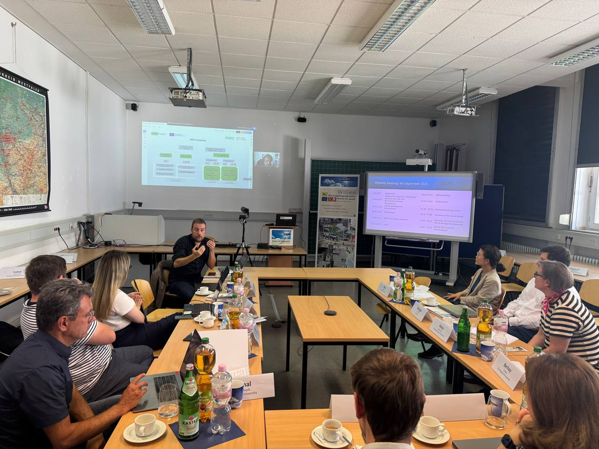

What is PROMISE?
PROMISE (Progressive Reduction of Car Dependency through Micro-Mobility, Infrastructure, and Smart Policy Integration) is a three-year European research initiative focused on transforming short urban trips. By improving infrastructure, policy alignment, and user acceptance, PROMISE demonstrates how micro-mobility can become a reliable alternative to car use.
PROMISE treats both personal mobility and last-mile logistics as a unified system, supporting cleaner, more inclusive, and more efficient urban mobility.
Why PROMISE Matters
Car Dependency
Short car trips cause congestion, emissions, and unsafe streets.
Regulation Gaps
European cities face fragmented and inconsistent micro-mobility rules.
Accessibility Barriers
Elderly and mobility-restricted groups lack safe and adapted options.
Behavioral Resistance
Shifting habits requires trust, familiarity, and infrastructure.
Our Approach
PROMISE uses a co-creation and research-driven methodology that brings together municipalities, citizens, researchers, mobility operators, and logistics partners to collaboratively design mobility solutions.
Through Living Labs, PROMISE tests new infrastructure, services, and logistics practices in real city settings, combining human-centered insights with data-driven analysis.
A central output is the Micro-Mobility Decision Support Tool (MDST), which helps cities:
- Identify safe and continuous micro-mobility routes
- Plan infrastructure improvements and hubs
- Optimize cargo-bike logistics and curb space
- Assess safety, emissions, and accessibility impacts
- Develop evidence-based mobility policies

At a Glance
Smart Micro-Mobility
Integrating cycling, walking, e-bikes, cargo bikes, and shared modes.
Urban Co-Creation
Citizens, businesses, and city partners design mobility together.
Decision Support
GIS-based tools for safer routes and policy planning.
Living Labs
Testing mobility solutions directly in European cities.
Expected Impacts
Reduced Car Use
Micro-mobility replaces short and inefficient car trips.
Safer Networks
Better planning improves lanes, crossings, and shared spaces.
Smarter Logistics
Cargo-bike solutions reduce vans in crowded centers.
Better Policy
Clear guidance helps cities regulate micro-mobility effectively.
15-Minute Cities
Transferable models support compact, walkable neighborhoods.
Inclusive Design
Communities shape solutions that impact their daily lives.
Living Labs
Explore our Living Labs, real-world urban mobility testbeds where we develop, test, and demonstrate innovative solutions for smarter, greener cities.
Explore the Living Labs